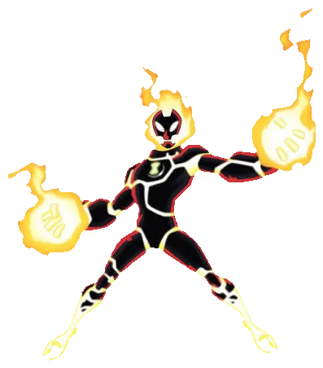

Ten worlds. One watch. Every alien.
A cinematic archive for the whole Ben 10 universe — ten full dossiers, every watch era, and a DNA matcher that finds a form even when you spell it wrong. Pick a card. Slam the dial. The Omnitrix does the rest.
LINK: STABLE
LAT 41.02 // LON -73.44
Core temp: nominal
Self-repair: armed

Ten forms. Zero bad ideas.
Every card opens a full dossier — lore, power set, failure modes, combat telemetry and the Omnitrix entry. The watch samples DNA; this archive samples the stories.
The watch is not a weapon. It is a database with a wrist strap — and the best interface in the universe should feel like slammed metal, green light and a very bad idea.
Omniverse Protocol is a hackathon-ready UI/UX system built around one idea: every page should feel like a transformation. Navigation is a warp. Cards are DNA samples. Search is a scan. The 404 is a lost signal. The whole site shares one visual language, so it can be lifted into any fan project, portfolio or product demo without losing its character.
Four marks. One lineage.
Prototype, recalibrated, evolved, rebuilt. Each mark changed the interface, the playlist and the stakes. The archive tracks all four.
Five eras. One universe.
From a summer road trip to a multiverse war. The watch kept rebuilding itself, and the universe kept getting bigger.
Slam the dial.
Choose a form and let the Omnitrix handle the transition. Or search all 55+ samples and find the one you actually remember.